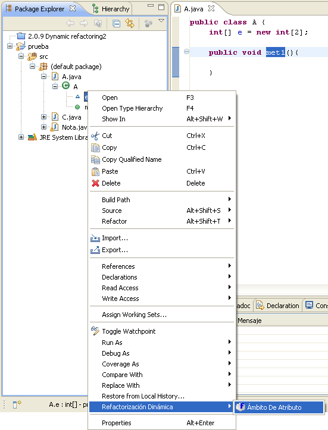
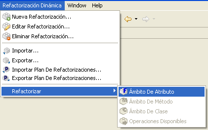
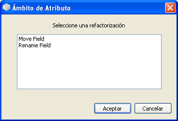
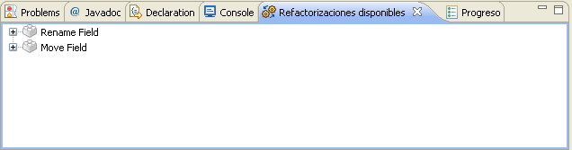

Ejecutar Refactorizaciones: Operaciones con �mbito de AtributoEjecutar Refactorizaciones: Operaciones con �mbito de Atributo
Ejecutar Refactorizaciones: Operaciones con �mbito de AtributoEjecutar Refactorizaciones: Operaciones con �mbito de AtributoCuando se haya seleccionado un atributo de una clase en el árbol de la vista "Package Explorer" o cualquier otra vista de Eclipse, se activarán las refactorizaciones con ámbito de atributo. Para ejecutar cualquiera de ellas, existen dos posibilidades.
Haga clic con el botón derecho en el atributo sobre el que desea aplicar la refactorización, y seleccione la opción Refactorizacion Dinamica > Ambito De Atributo en el menu desplegable.

Seleccione la opcion de menu Refactorizacion Dinamica > Refactorizar > Ambito de Atributo en Eclipse.

Una vez que se le indica al plugin que se desea ejecutar una refactorizacion sobre el elemento seleccionado, se empieza a construir el modelo interno que se utilizara. Cuando se completa el proceso, aparecera una ventana de selección con las refactorizaciones con ámbito de atributo disponibles.

Refactorizaciones con �mbito de �tributo
Es en este momento cuando se debe seleccionar la refactorización que se desea aplicar. Una vez elegida,
pulsar el botón Aceptar iniciará el proceso de refactorización.
Cuando se selecciona un atributo de las vistas de Eclipse, la vista "Refactorizaciones dsiponibles" actualiza su contenido con las refactroizaciones de ámbito de atributo. Después se de hacer un doble-click en alguna de ellas para comenzar su ejecución.

vista "Refactorizaciones disponibles"
Acuda a la lista de tareas relacionadas debajo para obtener información más detallada sobre cómo configurar y ejecutar refactorizaciones.